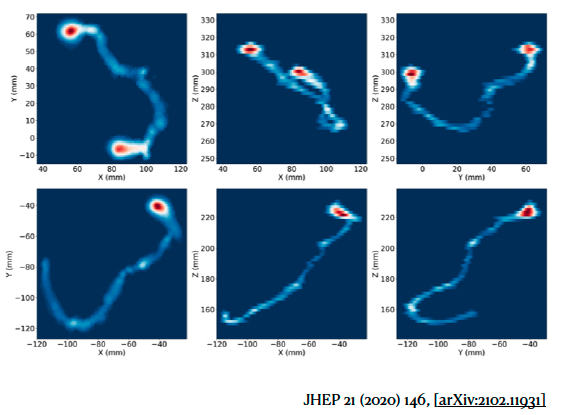

Fanal, a neutrino-less beta double decay search#
Objectives#
Do a search for double-beta neutrino-less decays, \(\beta\beta0\nu\), in \(^{136}\mathrm{Xe}\) using mock detector data.
Learn the different steps in a typical “rare decay” search analysis in a High Energy Physics, HEP, collaboration.
Dynamic#
Students work in groups forming collaborations
Each collaboration:
selects a student as spokesperson
selects its name from: alpha, beta, gamma, epsilon, delta, and accesses its detector mock data
performs a \(\beta\beta0\nu\) search following these notebooks as guidelines
presents its results in an oral contribution and writes an article.
Physics#
One of the most relevant questions still open in Particle Physics is if the neutrino is its own anti-particle, if it is Majorana.
The only viable experiment to determine if the neutrino is Majorana is to observe a \(\beta\beta0\nu\) decay, a hypothetical decay where a nucleus simultaneously decays into two electrons with no emission of neutrinos.
This decay can only happen in a few isotopes, i.e \(^{136}\mathrm{Xe}\).
The signal of the decay is quite clear:
The energy of the two electrons is equal to the \(Q_{\beta\beta}\) of the decay, for \(^{136}\mathrm{Xe}\), \(Q_{\beta\beta} = 2458\) keV.
The presence of two electrons, compared with the main backgrounds, which are single electrons.
The main backgrounds are single electrons from photo-electric or Compton scattering of the gammas produced from the radioisotopes of the natural chains, \(\mathrm{U}, \mathrm{Th}\).
In the case of \(^{136}\mathrm{Xe}\) the main backgrounds are:
The 2.447 MeV energy of the \(^{214}\mathrm{Bi}\) photopeak.
The tail of the 2.615 MeV \(^{208}\mathrm{Tl}\) gamma interactions.
The NEXT experiment is a 100 kg High Pressure Xenon TPC, where the signal-event signature is a track of approximately 10 cm composed of 2 electrons, whose two extremes both show a Bragg region — a larger deposition of energy, or “blob” — while the background, a single electron, only shows a Bragg region at one of its extremes.
NEXT also has an excellent energy resolution of 1% FWHM at \(Q_{\beta\beta}\).
In addition, NEXT is constructed with very high radio-pure materials and has a Cu shielding.
NEXT is expected to operate for 5 years at Laboratorio Subterráneo de Canfranc
Example of a two electron track from a pair conversion (top) and a single electron track from a Compton (bottom) obtained with the NEXT prototype, NEXT-White
 |
The main parameters of a neutrino-less \(\beta\beta0\nu\) experiment are:
A large exposure in kg·y (the total number of isotopes is proportional to the mass, kg) multiplied by the running time (years)
An excellent energy resolution (related to the \(Q_{\beta\beta}\) reconstructed peak)
A low number of background events (the number of background events expected for a given exposure in the energy Region of Interest, RoI, defined around the \(Q_{\beta\beta}\))
The analysis#
In HEP usually the search for rare decays is done as a blind analysis.
The analysis must be defined using simulated data and studied with calibration or blind data (data where the possible signal events have been removed) before accessing the full data set.
Blind analyses are designed in order to avoid human biases!
The data#
Each collaboration has access to the following data:
simulated data of \(^{214}\mathrm{Bi}\), \(^{208}\mathrm{Tl}\) and \(\beta\beta0\nu\) of \(^{136}\mathrm{Xe}\). These data will be used to define a signal selection, the RoI and to estimate the energy resolution in the \(Q_{\beta\beta}\) region
blind data, which contain no signal events. This data will be used to estimate the total number of \(^{214}\mathrm{Bi}\), \(^{208}\mathrm{Tl}\) and the number of bkg events expected after the signal selection in the RoI.
the full data, to estimate the number of signal events and the half-life of \(^{136}\mathrm{Xe}\), \(\mathcal{T}_{1/2}^{\beta\beta0\nu}(^{136}\mathrm{Xe})\).
The analysis steps#
Using simulated data, MC, to define the signal selection and the RoI. Compute the signal selection efficiencies in the different MC samples \(^{214}\mathrm{Bi}\), \(^{208}\mathrm{Tl}\) and \(\beta\beta0\nu\), NB.
Using simulated data to estimate the energy resolution for \(^{214}\mathrm{Bi}\), \(^{208}\mathrm{Tl}\) and \(\beta\beta0\nu\), NB.
Using blind data to estimate the number of background events from \(^{214}\mathrm{Bi}\), \(^{208}\mathrm{Tl}\) and the number of background events in the RoI, NB. Estimate also the uncertainty in the number of background events, NB.
Estimate the sensitivity of the experiment as a counting experiment. If in the RoI we observe \(n\) events, what is the limit or the confidence interval at 95% C.L. that we set on the \(\mathcal{T}_{1/2}^{\beta\beta0\nu}(^{136}\mathrm{Xe})\)? Has the experiment performed a discovery? NB
Using simulated data, define a fit method to extract from the data in an enlarged energy region the number of bkg events and signal, NB.
Access the full data, NB . Consider two analyses:
i) counting experiment: how many signal events are in your RoI?
ii) do a fit and extract the number of signal events
Estimate the limit or the confidence interval at 95 %CL of the \(\mathcal{T}_{1/2}^{\beta\beta0\nu}(^{136}\mathrm{Xe})\).
Publish the results, prepare an oral presentation for a conference and an article to publish
Exposures#
Collaborations:
alpha: Exposure 500 kg y.
beta: Exposure 1000 kg y.
gamma: Exposure 1000 kg y.
delta: Exposure 3000 kg y.
epsilon: Exposure 3000 kg y.
References#
[1] NEXT IFIC web page, NEXT DIPC web page
[2] The NEXT Collaboration (J. Martín-Albo et al.), Sensitivity of NEXT-100 to neutrinoless double beta decay, JHEP 1605 (2016) 159.